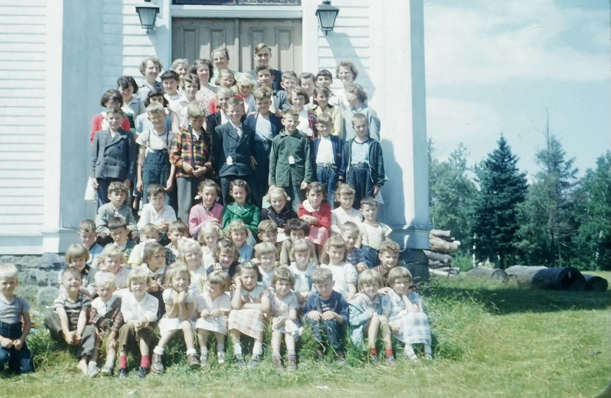

The Family Chronicle
No. 122 October 27, 2006
____________________________________________________________________

Vacation Bible Class at St. Stephens United Church; undated but probably 1953-1955. (Glendenning Collection)
The Shantymen
Shantymen visited forestry workers and fishermen, and probably others such as sailors and trappers bring Christianity (or was it religion?) to folk who lived in isolated areas. I do not recall them ever being to Black River but I recall mention of them. It may well have been that either Mother or one of her church organizations contributed to the cause from time to time.
Lux Daily Dippers
If you are a senior, you may have been a “Lux Daily Dipper.” As I recall, the term was a part of a promotion of Lux soap flakes and applied, as I recall, to ladies who dipped their undies daily in Lux.
Speaking of soap, mention was made at our recent family reunion of “Surprise Soap”. As I recall it was an amber coloured translucent hand Soap. Was Sunlight Soap similar? Then there was carbolic soap, Lifebuoy (was it a deep pink or orange in colour?), Naptha which didn’t seem to stay around very long, and for really dirty hands, there was lava soap which contained pumice which is the fine ask from a volcano. (Pumice was, and perhaps still is, used for smoothing the finishes of fine furniture.)
Radio Programs
I was with a group a few nights ago, that was reminiscing about radio programs. Here are a few I recall or that were mentioned: Gabriel Heater and the news (WOR); the Lone Ranger, Amos and Andy, the Green Hornet, WWVA Wheeling, West Virginia for country music; the Maritime Gardener, Gillette Friday night Boxing; Don Messer and the Islanders; Dagwood and Blondie (or in the words of a neighbour, (Deadwood and Baldy); Fibber McGee and Molly.
Rev. Perry Rockwood was a breakaway Presbyterian Minister in or near Antigonish, Nova Scotia but I think that was later.
As was Wayne and Shuster.
I am sure there were many others.
My rocking horse
My father made a rocking horse; I cannot remember if it was made for me or handed down. It would be considered large enough for two youngsters although I cannot remember of two using it at the same time. Presumably the wood was cut on the farm as was the case for most of the construction at our place. I do not recall the type of wood used for the rockers but the remainder was made of white pine and not painted.
His and Her Chairs
Two home-made arm chairs sat in our kitchen; both made by my father. The larger one was for my father and the smaller one for Mother. I think that they were framed with hardwood, probably ash, but I cannot remember for sure.
The back of the chair was slanted for comfort. The seats and backs were made of rope in a basket weave pattern. The seat also had a cushion – probably one filled with feathers but I cannot really recall. They were made by hand and the wood was cut on the farm.
The Family Chronicle (Copyright) is an occasional newsletter published by Don Glendenning and posted on the family website. It is intended to share information about my family, community and the times in which I grew up. While every effort is made to be accurate, errors are likely to occur. Comments, enquiries and information may be sent to 62 Queen Elizabeth Drive, Charlottetown, PEI, C1A 3A9. Tel: 902 892 5859. Email: dglende@auracom.com Web: www.glendenning.net/don